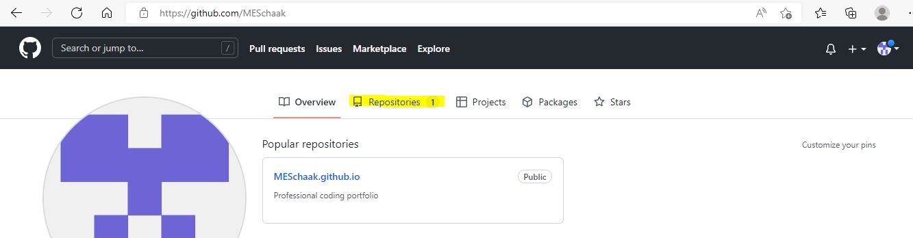

To start your coding journey on GitHub, you must first be able to access GitHub. :) In order to be able to access GitHub, you will need to create a GitHub account. The below link will take you to the GitHub website.
href="https://github.com/join/customize"Once you have established a GitHub account, you will be able to create a repository that will house your code.
You can either upload your already created code file or code within GitHub. If you code outside of GitHub, you can drag and drop you files into your GitHub respository.
There are an abundance of resources that will assist you in learning how to begin learning how to code. See below:
href="https://stackoverflow.com/questions/tagged/javascript" href="https://developer.mozilla.org/en-US/docs/Learn/Getting_started_with_the_web"